🏆 melhor da região
Carolina
Crocante por fora, cremosa por dentro. A que faz o cliente voltar no dia seguinte.
Voltamos! Agora no Cursino, 1568
Padaria e confeitaria artesanal na Av. do Cursino. Pão de fermentação natural saindo do forno, doce feito com carinho e aquele café que vira pausa na correria de SP.
entrega ou retirada na loja · também no Keeta e Food To Save
Dúvidas? Fale com a gente no WhatsAppTer. a sáb. 9h às 20h · dom. e seg. 9h às 18h
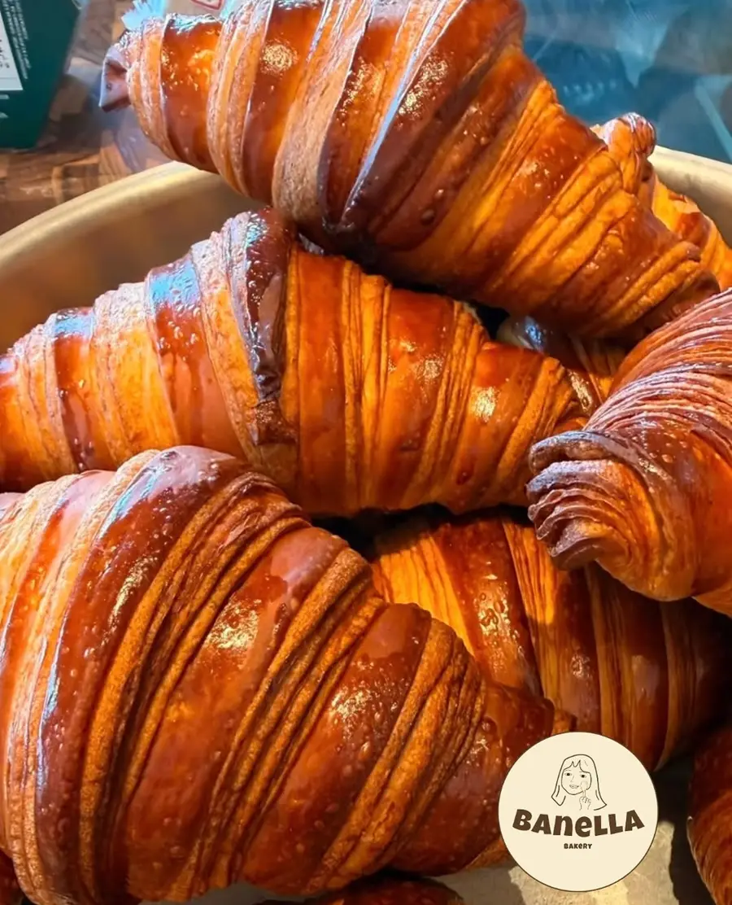
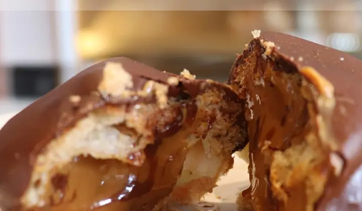
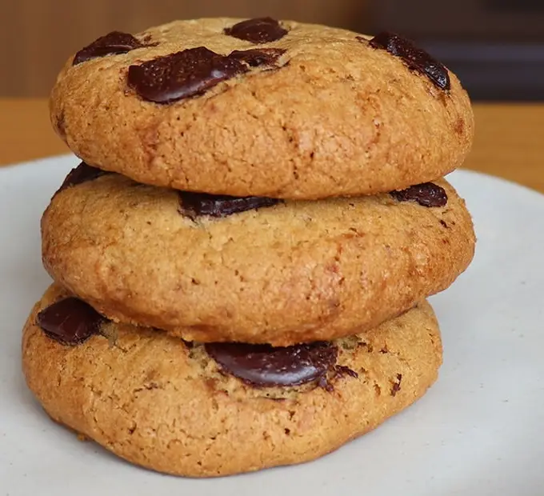
a nossa história
do antigo 1600 para o
1568
na mesma avenida, num espaço 3x maior.
a essência continua a mesma ♥
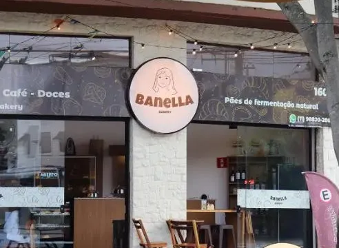
espaço maior pra você sentar, tomar café e ficar
tipos de pão de fermentação natural todo dia
toque e você já está na Banella do iFood, pronta pra pedir
os queridinhos da casa
Os que a própria Banella chama de os melhores da região.
Crocante por fora, cremosa por dentro. A que faz o cliente voltar no dia seguinte.
Douradinho por fora, macio por dentro. Com gotas de chocolate que derretem no primeiro pedaço.
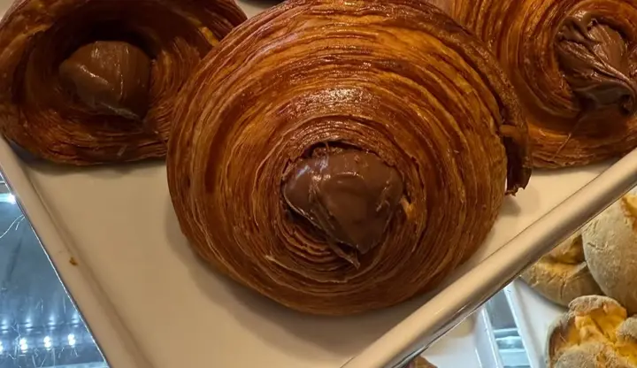
Dourado e cheio de camadas, puro ou recheado. Na chapa com presunto e queijo no bistrô.
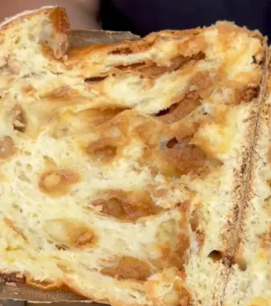
100% integral, semi-integral, branco, baguete e focaccia. Saindo do forno todo dia.
pra mesa de Natal
Panetones de fermentação natural, pão de Natal, tortas e doces pra ceia, pro café do dia 25 ou pra presentear a família, os amigos e a equipe do trabalho.
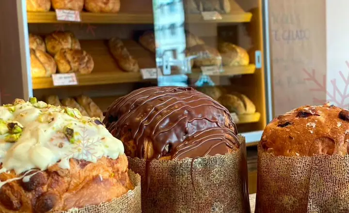
Toque no doce e peça pelo iFood. Disponibilidade e valores aparecem direto na loja.
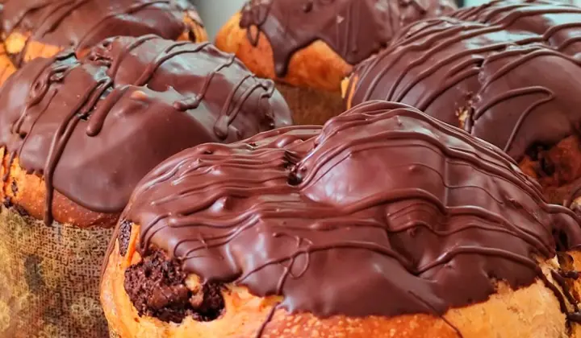
Fermentação natural. Escolha o sabor:
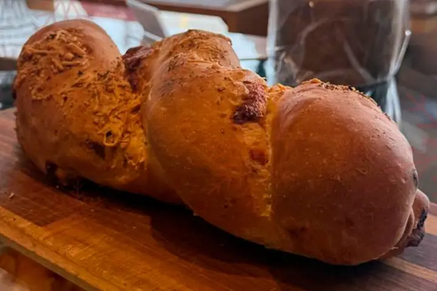
Pão de Natalpro café do dia 25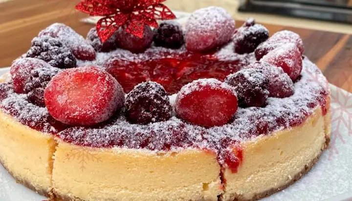
Cheesecakede frutas vermelhas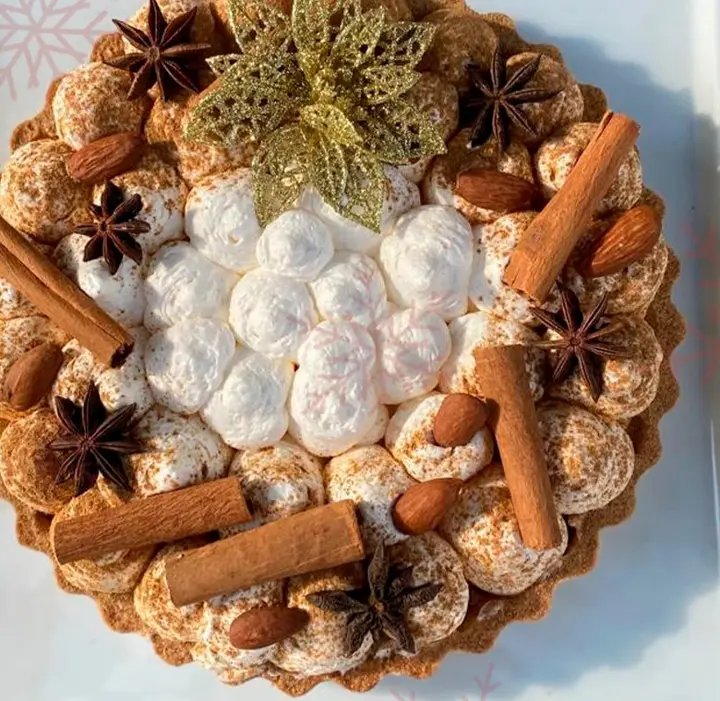
Torta natalinacanela e amêndoas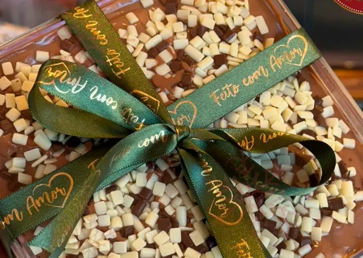
Pavê Banellacom carolinas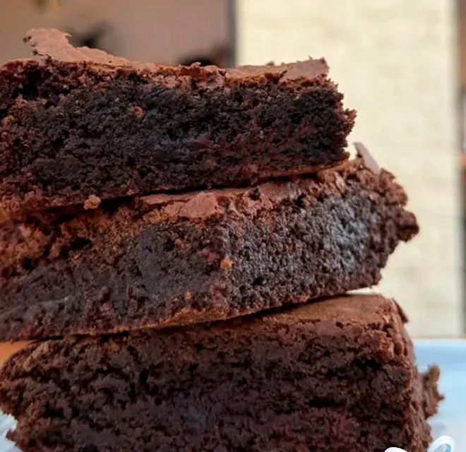
Browniepra caixinha de presente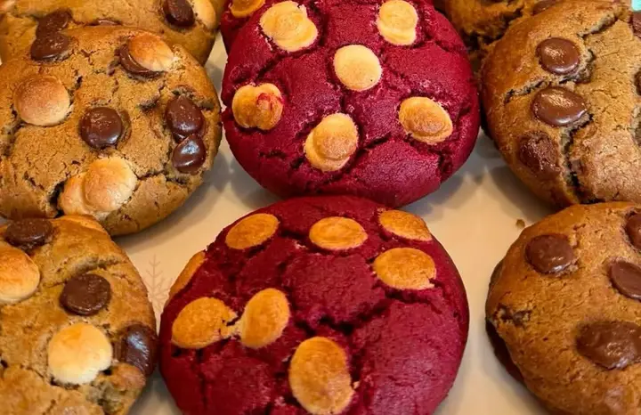
Cookies recheadosedição de Natalentrega em casa ou retirada
Av. do Cursino, 1568
um dia na Banella
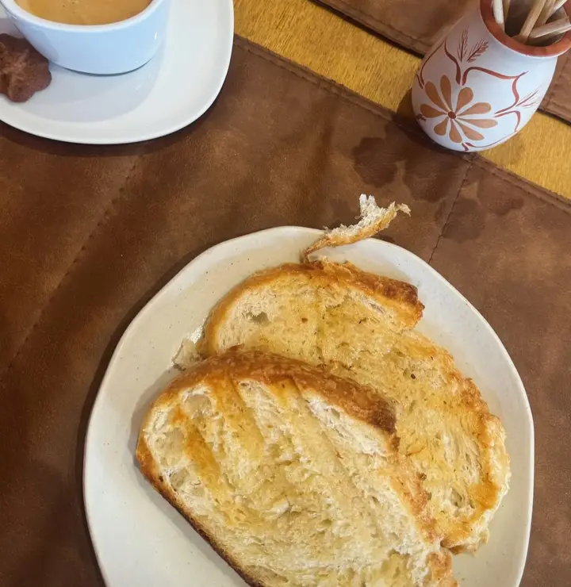
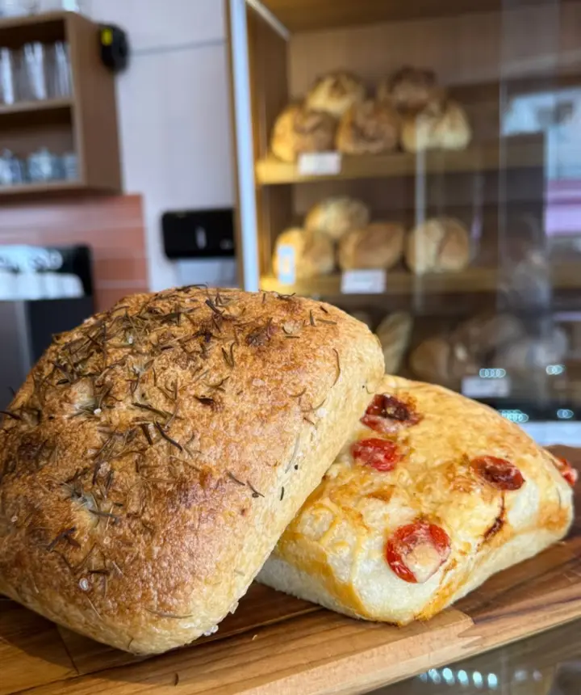
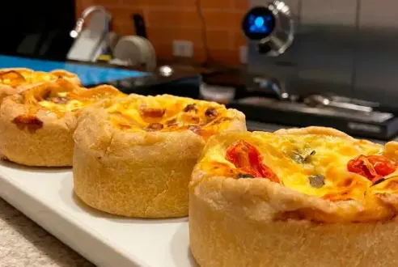
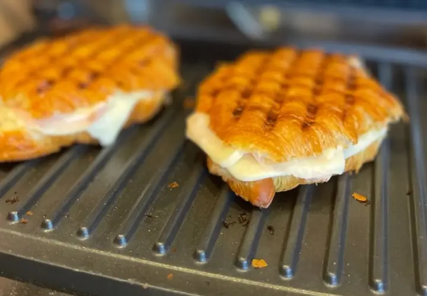
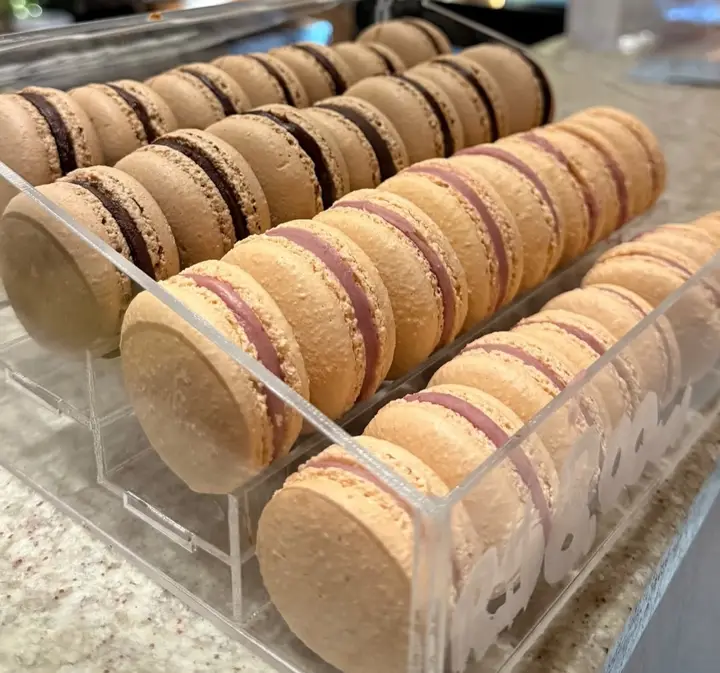
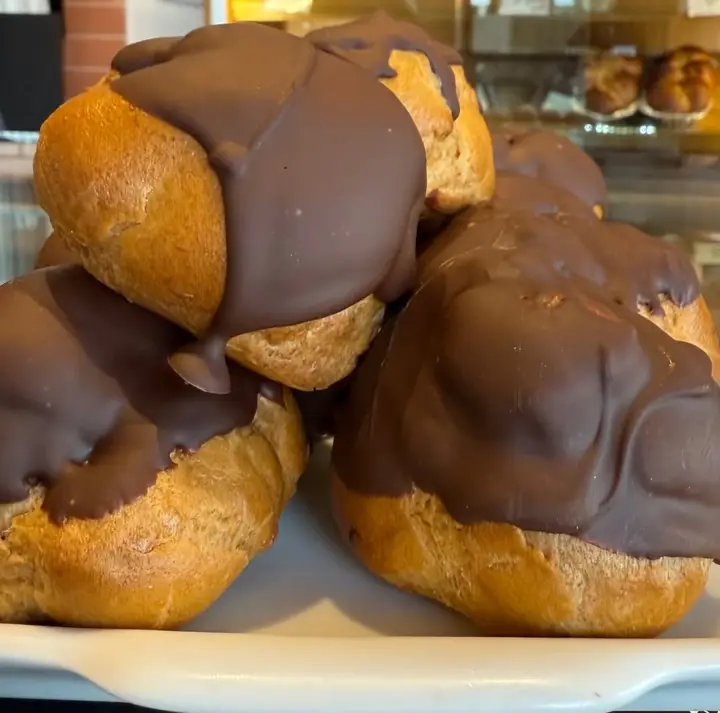
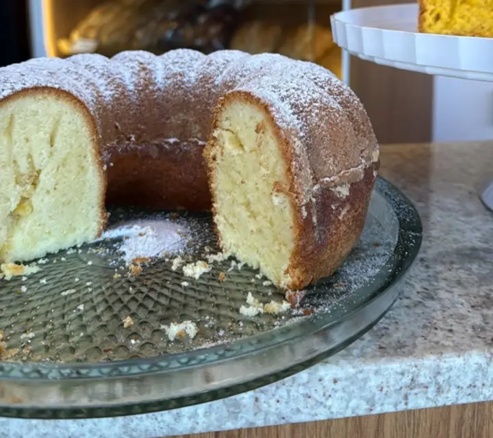
como pedir
Veja o que sai do forno, da confeitaria e do bistrô aqui no site.
A loja da Banella abre no app (ou no site) do iFood, pronta pro pedido.
Entrega em casa ou retirada na loja. Também estamos no Keeta e no Food To Save.
“Sua escolha pelo nosso pão é a nossa gratidão!”
equipe Banella
onde fica
Saúde, São Paulo-SP · pertinho do antigo 1600
Confira o horário abaixo
@banellabakery
Novidade da vitrine, fornada do dia e cardápio de época saem primeiro no Instagram.